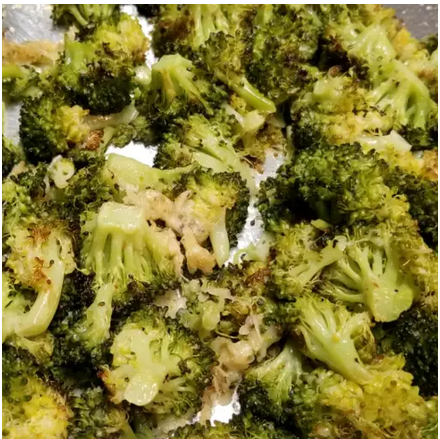

Easy Roasted Broccoli

Description
This easy roasted broccoli is easy to make and will satisfy even the pickiest eaters.
Ingredients
- 14 ounces broccoli
- 1 tablespoon olive oil
- salt and ground black pepper to taste
Steps
Preheat the oven to 400 degrees F (200 degrees C).
- Cut broccoli florets from the stalk. Peel the stalk and slice into 1/4-inch slices. Mix florets and stem pieces with olive oil in a bowl and transfer to a baking sheet; season with salt and pepper.
- Roast in the preheated oven until broccoli is tender and lightly browned, about 18 to 20 minutes.